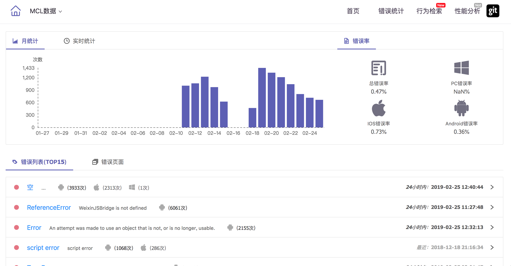
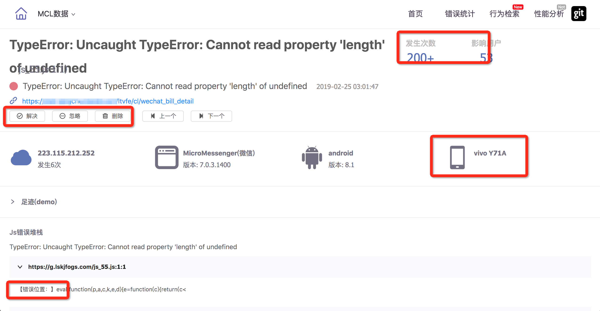
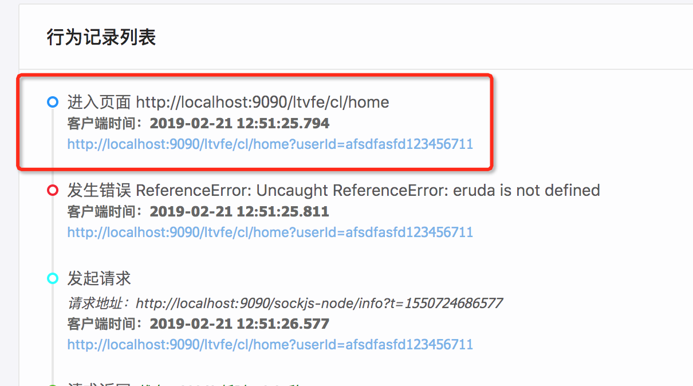
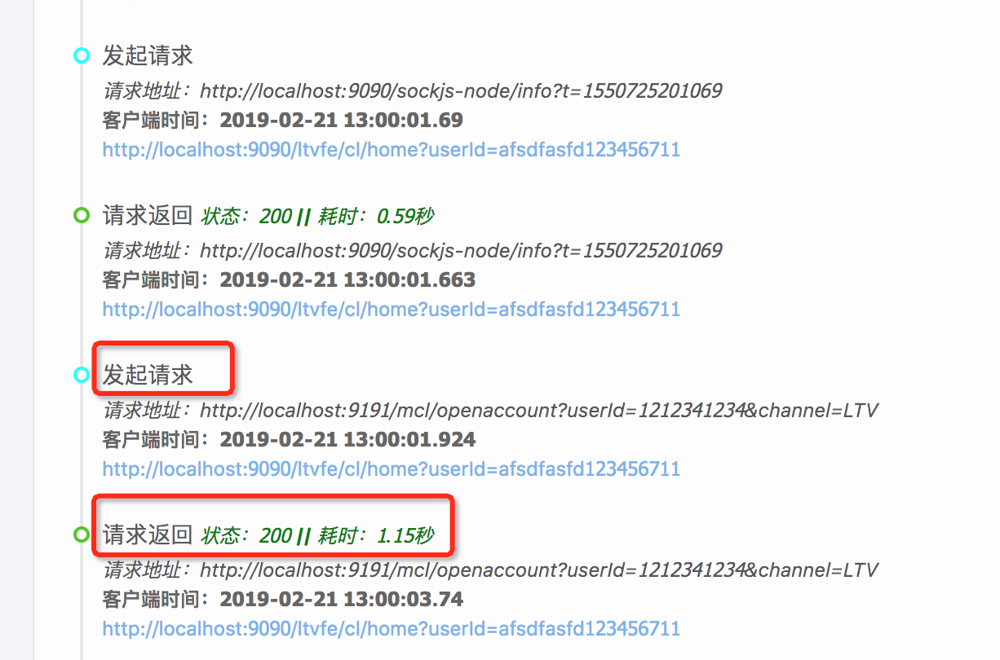
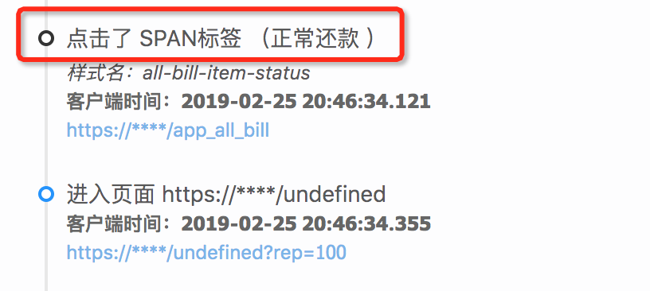
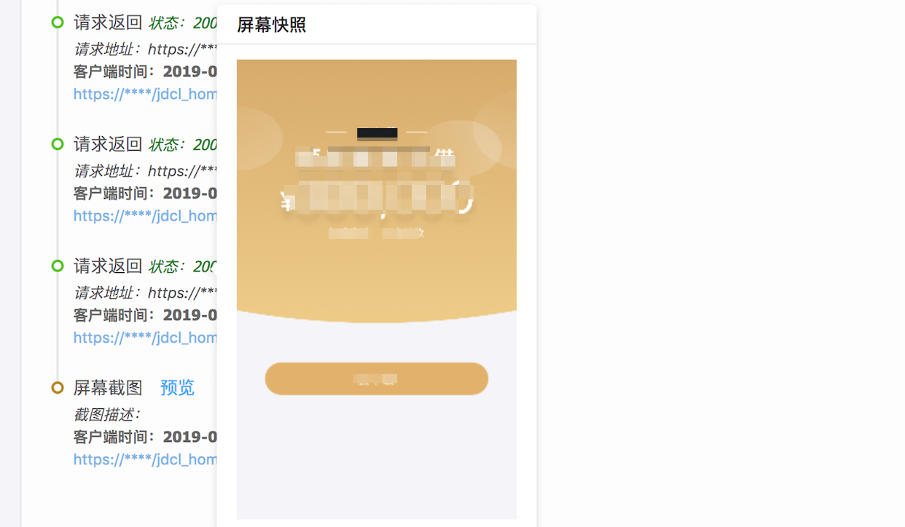
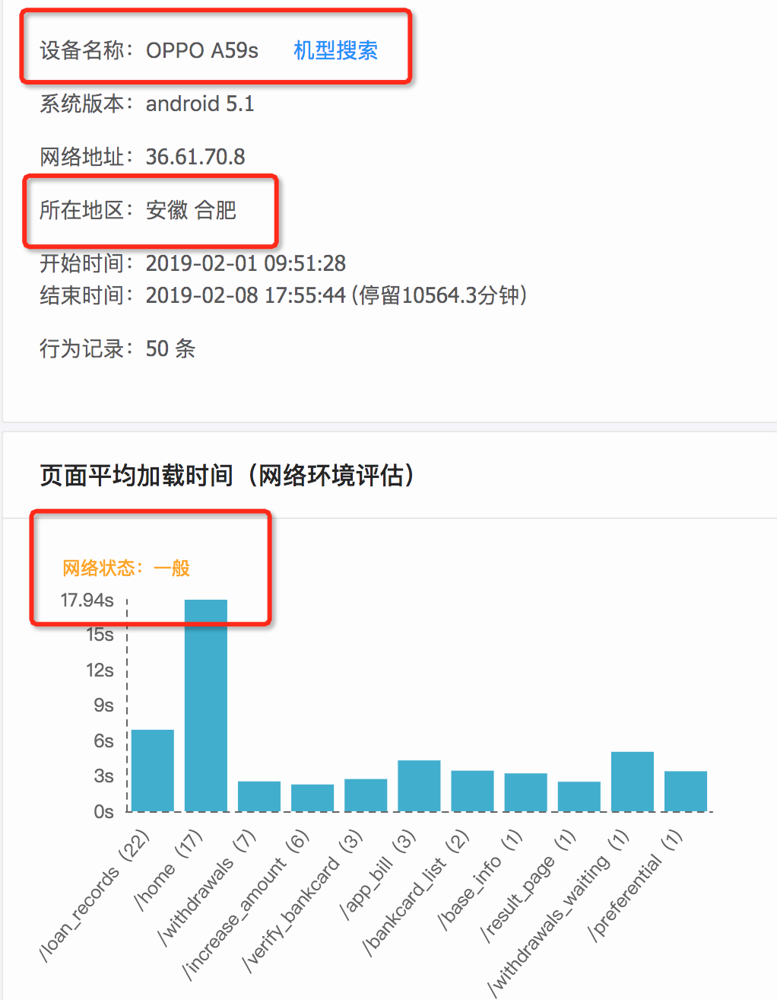

摘要： 记录用户行为，排查线上BUG。
Fundebug经授权转载，版权归原作者所有。
一直以来，前端的线上问题很难定位，因为它发生于用户的一系列操作之后。错误的原因可能源于机型，网络环境，复杂的操作行为等等，在我们想要去解决的时候很难复现出来，自然也就无法解决。 当然，这些问题并非不能克服，让我们来一起看看如何去定位线上的问题吧。
所谓，工欲善其事必先利其器，你不能撸起袖子蛮干，所以，我们需要一个工具。我们曾经尝试用过很多监控工具去统计这些错误，比如，听云、OneApm、sentry、Fundebug、growingIo 等等。 每家工具都各有所长，但也都各有所短，而且要花不少的钱（感觉是痛点，哈哈）。
众所周知，我们有办法去统计前端的错误，那就是大名鼎鼎的 window.onerror 方法， 用法如下：
// 重写 onerror 进行jsError的监听
window.onerror = function(errorMsg, url, lineNumber, columnNumber, errorObj) {
var errorStack = errorObj ? errorObj.stack : null;
// 分类处理信息
siftAndMakeUpMessage(errorMsg, url, lineNumber, columnNumber, errorStack);
};window.onerror 方法中参数的意义我就不一一介绍了，我相信大家也已经耳熟能详了。 总之它能够为我们记录下线上的很多错误，以及一些额外的信息。我将window.onerror方法收集到的错误信息进行分析统计后的结果如下：

如上图所见： 我们统计出了每天的错误量，每个小时的错误量，每天的错误率变化，来鉴定我们线上环境是否健康。我们按照JS错误数量进行分类排序，按照页面进行错误分类。通过上边的数据分析，我们能够清晰地观察到线上项目的报错情况。
线上的错误日志统计出来了， 如何解析这些错误日志呢。如下图，解析出用户的机型，版本，系统平台，影响范围，以及具体的错误位置， 从而提高我们解决问题的效率。

window.onerror 方法能够利用的地方都已经用的差不多了，但是它真的可以帮我们定位和解决前端线上的问题吗？
线上能够修复的问题我已经尽量修复了，但是线上的问题频发。 当客服反馈一个问题， 你发现没有测试机型，无法复现用户错误的时候，让你来修复这个问题，只能两眼一抹黑，无能为力。
例如：线上用户进过了复杂的链接跳转而发生了错误；用户调用的接口发生了异常或者超时；线上的用户反馈异常根本就跟实际情况不符，等等。这些非直观型的问题该如何解决？ 所以，我们需要用户的行为记录。
有些错误是前端页面经过复杂的跳转、回退之后才发生的，就算测试人员也很难测试出这种问题，因为线上的用户的任何行为都有可能出现。往往我们知道的只是他在最后停留的页面发生了错误。 如此，我们记录下用户的跳转日志， 就能够复现出用户的行为， 从而复现BUG。

接口请求是一个前端项目涉及最多的行为，接口的异常包括：后台报错，响应超时，网络环境较差，重复接口数据覆盖等等。这些错误也只有在真实的用户环境中才会发生，是典型的线上问题。我们可以记录下用户的请求时间，参数，响应时间，响应状态等等，可以具体分析出来接口对页面的影响。

用户经过一系列复杂的行为操作之后（主要是点击行为），页面的样子和保存的数据都经过了很多变化，此时此刻最容易发生数据错乱的现象，导致修复bug的时候无从入手，是复现用户行为中重要的一环。

即使你记录下所有的行为，但是你依然需要看到页面的样子，才能够分析出问题所在，那么我们依然可以通过js截图来看看用户设备上的样子。

当用户所有的行为都被我们掌握之后，我们能够复现出用户的行为，甚至能够复现出用户的问题，也许我们还需要一些场外信息才能精准定位问题，比如，用户的机型，地理位置，系统版本，当时的网络环境（这个不准确，我是依据用户当时首次加载页面的时间来判断，只能作为参考依据）

问题产生的原因五花八门，只有把日志做全了，才能够准确的定位和解决问题。
这是我排查线上问题的经验和实战，分享出来，以求分享和学习。
说了这么多都没有直接体验直观，请移步。 Demo地址
Fundebug专注于JavaScript、微信小程序、微信小游戏、支付宝小程序、React Native、Node.js和Java线上应用实时BUG监控。 自从2016年双十一正式上线，Fundebug累计处理了10亿+错误事件，付费客户有阳光保险、核桃编程、荔枝FM、掌门1对1、微脉、青团社等众多品牌企业。欢迎大家免费试用！